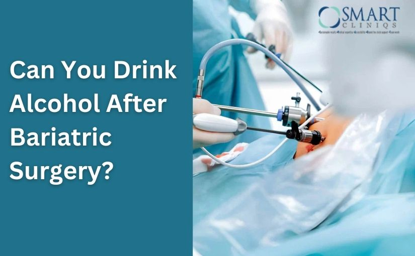

Bariatric surgery is a life-changing procedure that helps people lose weight, improve health conditions like diabetes and blood pressure, and build a healthier lifestyle. However, after surgery, the body processes food and drinks very differently—including alcohol.
So, can you drink alcohol after bariatric surgery? The short truth is: yes, but with strict caution—and sometimes not at all, depending on the type of surgery and the time since your operation.
If you’ve undergone Bariatric Surgery in Delhi or are planning to, especially under expert care like Dr. Atul Peters, understanding how alcohol affects your body after surgery is critical for your safety.
Understanding Bariatric Surgery
Bariatric surgery is a medical procedure designed to help people lose significant weight when diet, exercise, and lifestyle changes alone have not worked. It is usually recommended for individuals who are severely overweight or who have obesity-related health problems such as diabetes, high blood pressure, sleep apnea, or joint pain. The main goal of bariatric surgery is not just weight loss, but long-term improvement in overall health and quality of life.
During bariatric surgery, the size of the stomach is reduced, or the way food moves through the digestive system is changed. Because of this, patients feel full faster, eat smaller portions, and absorb fewer calories. Common types of bariatric surgery include sleeve gastrectomy and gastric bypass. Each procedure works in a slightly different way, but all of them help control hunger, improve metabolism, and support sustainable weight loss.
How Bariatric Surgery Changes Your Body
Bariatric surgery is not just about eating less—it changes how your digestive system works. Depending on the procedure (gastric bypass, sleeve gastrectomy, or others), your stomach size is reduced, and in some cases, part of the intestine is bypassed.
These changes affect:
- How fast alcohol enters your bloodstream
- How strongly alcohol affects you
- How long does alcohol stay in your body
After surgery, alcohol no longer behaves as it did before.
Why Alcohol Affects You More After Bariatric Surgery
After bariatric surgery, your body handles alcohol very differently than before. Even small amounts can feel stronger and last longer. Below are the key reasons explained clearly, with paragraphs and bullet points for easy understanding.
1. Faster Alcohol Absorption
After bariatric surgery, the stomach becomes much smaller, and food or liquids pass into the small intestine more quickly. Alcohol does not stay in the stomach for long, which means it enters the bloodstream much faster than before surgery.
- Alcohol reaches the small intestine almost immediately
- The body absorbs alcohol at a rapid rate
- You may feel drunk after just a few sips
- The effect starts within minutes instead of gradually
2. Higher Blood Alcohol Levels
Because alcohol is absorbed quickly and more efficiently, blood alcohol concentration (BAC) rises much higher than expected. Even one drink can push alcohol levels beyond what the body can safely handle.
- A single drink may feel like 2–3 drinks
- Blood alcohol levels peak faster
- Risk of dizziness, confusion, and poor coordination increases
- Legal driving limits can be crossed unintentionally
3. Reduced Alcohol Tolerance
Bariatric surgery significantly lowers alcohol tolerance. The body can no longer process alcohol the same way due to changes in digestion and metabolism.
- Less alcohol is needed to feel intoxicated
- Side effects like nausea and lightheadedness occur quickly
- Loss of control happens faster
- The margin between “safe” and “too much” becomes very small
4. Slower Breakdown of Alcohol
After surgery, the liver takes longer to break down alcohol. This means alcohol stays in your system for a longer period, increasing its effects and after-effects.
- Intoxication lasts longer
- Hangovers feel more intense
- Fatigue and dehydration increase
- Alcohol remains in the bloodstream for extended hours
5. Increased Risk of Dehydration
Alcohol is a diuretic, which means it causes fluid loss. After bariatric surgery, patients already consume smaller amounts of fluids at a time, making dehydration more likely.
- Increased urination leads to fluid loss
- Difficulty meeting daily fluid intake goals
- Higher risk of dizziness and weakness
- Dehydration-related headaches become common
Why Doctors Strongly Limit Alcohol After Surgery
Doctors place strict limits on alcohol consumption after bariatric surgery because the body becomes far more sensitive to alcohol and its effects. Since the digestive system is altered, alcohol is absorbed faster, acts stronger, and stays in the body longer than before. This can create serious health, safety, and weight-related problems. Below are the key reasons explained clearly, using both paragraphs and bullet points.
1. Increased Risk of Alcohol Dependency
After bariatric surgery, some patients experience changes in appetite control and emotional coping mechanisms. Since food intake is limited, alcohol can sometimes become a substitute for emotional relief, increasing the risk of dependency.
- Faster alcohol absorption increases the “reward” effect
- Higher risk of addiction transfer from food to alcohol
- Greater chance of habitual or binge drinking
- Harder to control intake even with small amounts
2. Rapid Intoxication and Safety Concerns
Because alcohol enters the bloodstream very quickly after surgery, patients can feel intoxicated after just a few sips. This raises serious safety issues in daily life.
- Sudden dizziness or loss of balance
- Impaired judgment and coordination
- Higher risk of falls and injuries
- Increased danger while driving or operating machinery
3. Interferes With Weight Loss and Maintenance
Alcohol provides empty calories with no nutritional value. After bariatric surgery, even small amounts can slow down weight loss or cause weight regain.
- High calorie content without feeling full
- Increased hunger and cravings
- Reduced fat-burning efficiency
- Higher chances of long-term weight regain
4. Increased Risk of Stomach Irritation and Ulcers
The stomach becomes smaller and more sensitive after surgery. Alcohol can irritate the stomach lining and interfere with healing.
- Higher risk of gastric irritation
- Increased chance of ulcers
- Worsening acid reflux or heartburn
- Delayed recovery of the stomach lining
When (and If) Alcohol May Be Considered Safe
If alcohol is allowed at all, doctors usually recommend:
- Waiting at least 3 months or more
- Consume only if your bariatric surgeon/dietician allows
- No drinking on an empty stomach
- Very small quantities
- Never before driving
Always consult your bariatric surgeon before making this decision.
Experienced specialists like Dr. Atul Peters emphasize patient-specific guidance rather than general rules.
Signs That Alcohol Is Not Safe for You
Stop drinking and consult your doctor if you experience:
- Extreme dizziness
- Nausea or vomiting
- Rapid heartbeat
- Loss of control
- Emotional dependency on alcohol
These signs indicate your body is not tolerating alcohol well after surgery.
Long-Term Impact of Alcohol After Bariatric Surgery
Long-term alcohol use after surgery can lead to:
- Liver damage
- Nutritional deficiencies
- Weight regain
- Mental health issues
That’s why many surgeons advise complete avoidance, especially in the first few years.
Final Thoughts
Drinking alcohol after weight-loss surgery is not a simple yes-or-no decision. Because the body absorbs alcohol faster and reacts more strongly after bariatric procedures, even small amounts can lead to health risks, delayed recovery, and weight regain. For patients who have undergone Bariatric Surgery in Delhi, following medical advice regarding alcohol is essential to protect both short-term healing and long-term results. In many cases, avoiding alcohol—especially during the first year after surgery—helps ensure safer recovery and better weight-loss outcomes.
Ultimately, the success of bariatric surgery depends on lifelong lifestyle changes, not just the procedure itself. Choosing caution with alcohol supports better digestion, stable energy levels, and sustained weight loss. Under the guidance of an experienced specialist like Dr. Atul Peters, patients can make informed decisions that prioritize health, safety, and lasting success after surgery.